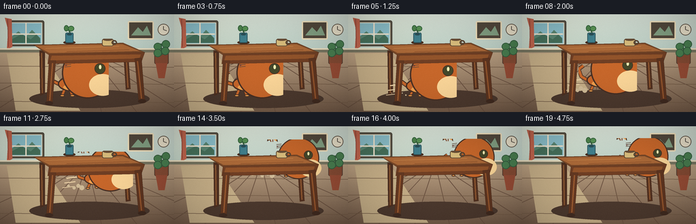
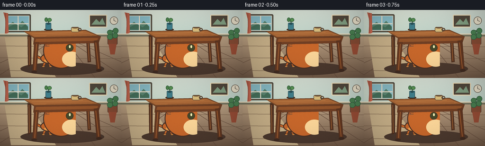
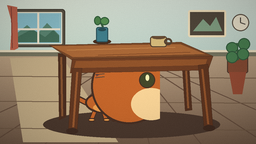

CODING AGENTS AS PIXEL WORLD MODELS
traex/GPT-5.6-Sol · dynamic_spatial_relationship_0018
点击播放 · 原生 RGB 像素
逐轮保存的候选
回放视频、检查图与代码变化。
每份候选均可单独播放。实际图片检查记录在下方工具轨迹中。
候选 01播放与检查图
点击播放 · 原生 RGB 像素


展开代码变化
--- 上一保存版本
+++ 本次保存版本
@@ -0,0 +1,232 @@
+from pathlib import Path
+import math
+import numpy as np
+from PIL import Image, ImageDraw, ImageFilter
+import artifact_io
+
+W,H,N=256,144,20
+SS=4
+rng=np.random.default_rng(1801)
+
+def sc(v): return int(round(v*SS))
+def pts(seq): return [(sc(x),sc(y)) for x,y in seq]
+
+def rr(d, box, r, fill, outline=None, width=1):
+ d.rounded_rectangle(tuple(sc(v) for v in box), radius=sc(r), fill=fill, outline=outline, width=sc(width))
+def el(d, box, fill, outline=None, width=1):
+ d.ellipse(tuple(sc(v) for v in box), fill=fill, outline=outline, width=sc(width))
+def ln(d, xy, fill, width=1, joint='curve'):
+ d.line(pts(xy), fill=fill, width=sc(width), joint=joint)
+
+def background(frame):
+ # softly lit illustrated room
+ y=np.arange(H*SS)[:,None]
+ wall_top=np.array([219,229,218.],float); wall_bottom=np.array([187,207,197.],float)
+ floor_top=np.array([184,159,130.],float); floor_bottom=np.array([116,91,72.],float)
+ arr=np.zeros((H*SS,W*SS,3),dtype=float)
+ split=sc(54)
+ q=np.clip(y/split,0,1)[...,None]
+ arr[:split]=wall_top*(1-q[:split])+wall_bottom*q[:split]
+ q2=np.clip((y-split)/(H*SS-split),0,1)[...,None]
+ arr[split:]=floor_top*(1-q2[split:])+floor_bottom*q2[split:]
+ # warm sunlight from upper left
+ xx=np.arange(W*SS)[None,:]
+ glow=np.exp(-(((xx-sc(36))/sc(75))**2+((y-sc(25))/sc(60))**2))*10
+ arr += glow[...,None]*np.array([1.0,.75,.3])
+ arr=np.clip(arr,0,255).astype(np.uint8)
+ im=Image.fromarray(arr,'RGB'); d=ImageDraw.Draw(im)
+ # window with deep frame and a tiny outdoor vista
+ rr(d,(12,9,65,47),3,(92,85,71),(69,63,53),1)
+ rr(d,(15,12,62,44),1,(150,197,205),(237,231,207),1)
+ # sky panes
+ d.rectangle((sc(17),sc(14),sc(59),sc(42)),fill=(139,191,202))
+ d.polygon(pts([(17,33),(27,25),(37,34),(47,23),(59,35),(59,42),(17,42)]),fill=(92,135,115))
+ d.polygon(pts([(17,37),(32,29),(45,37),(53,30),(59,36),(59,42),(17,42)]),fill=(70,112,91))
+ ln(d,[(38,13),(38,43)],(239,229,207),2); ln(d,[(16,29),(60,29)],(239,229,207),2)
+ # curtain
+ d.polygon(pts([(7,5),(17,7),(18,48),(10,52),(12,23)]),fill=(194,102,78))
+ ln(d,[(11,7),(12,48)],(143,70,58),1)
+ # wall picture and small clock
+ rr(d,(188,10,226,37),2,(82,72,60),(241,224,188),2)
+ d.polygon(pts([(193,31),(203,19),(210,26),(216,17),(222,31)]),fill=(131,160,131))
+ el(d,(232,14,249,31),(235,226,203),(92,80,67),1)
+ ln(d,[(240.5,22.5),(240.5,17.5)],(74,68,61),1); ln(d,[(240.5,22.5),(245,24)],(74,68,61),1)
+ # baseboard and floor seams in perspective
+ d.rectangle((0,sc(50),sc(W),sc(56)),fill=(119,117,96))
+ d.rectangle((0,sc(50),sc(W),sc(52)),fill=(232,220,190))
+ for yy in [76,101,128]: ln(d,[(0,yy),(256,yy+2)],(99,75,61),1)
+ for xb in [-70,-10,45,98,149,201,267,335]:
+ ln(d,[(128,54),(xb,144)],(105,80,63),1)
+ # pool of window light
+ d.polygon(pts([(10,58),(62,57),(118,142),(23,142)]),fill=(197,174,135))
+ # redraw delicate plank lines over light
+ for yy in [76,101,128]: ln(d,[(0,yy),(256,yy+2)],(115,91,70),1)
+ return im
+
+def draw_room_details(d):
+ # plant at far right
+ rr(d,(227,54,248,73),2,(132,74,51),(81,58,46),1)
+ d.polygon(pts([(229,72),(246,72),(242,94),(233,94)]),fill=(150,76,53))
+ ln(d,[(238,60),(237,43)],(61,101,66),2)
+ for box in [(226,42,238,53),(238,38,250,50),(226,51,238,63),(237,48,249,60)]:
+ el(d,box,(73,126,80),(51,91,61),1)
+
+def table_rear(d):
+ # floor shadow and back legs; everything here sits behind the cat
+ el(d,(43,111,220,138),(76,57,46,100))
+ # rear legs
+ d.polygon(pts([(58,53),(66,54),(66,117),(59,120)]),fill=(78,48,33))
+ d.polygon(pts([(181,51),(188,52),(192,110),(185,111)]),fill=(82,49,32))
+ ln(d,[(61,57),(62,116)],(136,85,49),2)
+ ln(d,[(185,54),(188,108)],(141,85,47),2)
+
+def draw_dust(d,x,y,strength,phase):
+ if strength<=0:return
+ for k in range(4):
+ px=x-23-k*7 + math.sin(phase+k)*2
+ py=y-2-k%2*3
+ r=(3.5-k*.55)*strength
+ if r>.3: el(d,(px-r,py-r,px+r,py+r),(208,187,151))
+
+def draw_motion(d,x,y,strength):
+ if strength<=0:return
+ for k in range(3):
+ yy=y-16+k*7
+ ln(d,[(x-46-k*3,yy),(x-31-k*2,yy-2)],(231,205,163),max(1,2-k*.35))
+
+def cat_sprite(x,baseline,scale=1,phase=0,pose='stand',blink=False):
+ # supersampled transparent sprite, side-facing right; keeps a consistent charming orange tabby
+ sw,sh=86,72
+ sp=Image.new('RGBA',(sc(sw),sc(sh)),(0,0,0,0)); d=ImageDraw.Draw(sp)
+ ox,oy=34,55
+ def X(v):return ox+v*scale
+ def Y(v):return oy+v*scale
+ outline=(73,48,36,255); orange=(199,103,43,255); light=(239,160,78,255); cream=(250,213,152,255); stripe=(126,67,39,255)
+ # gait and crouch
+ crouch=3 if pose=='crouch' else (1 if pose=='run' else 0)
+ lift1=0; lift2=0
+ if pose=='run':
+ lift1=4.5*max(0,math.sin(phase)); lift2=4.5*max(0,-math.sin(phase))
+ # tail behind body: smooth segmented curve
+ tailwave=math.sin(phase*.65)*3
+ ln(d,[(X(-19),Y(-17+crouch)),(X(-31),Y(-23+tailwave)),(X(-35),Y(-34+tailwave)),(X(-28),Y(-39+tailwave))],outline,max(2,6*scale))
+ ln(d,[(X(-19),Y(-17+crouch)),(X(-31),Y(-23+tailwave)),(X(-35),Y(-34+tailwave)),(X(-28),Y(-39+tailwave))],orange,max(1,3.8*scale))
+ # rear and front legs, animated
+ legs=[(-13,lift1,-4),(-5,lift2,3),(9,lift2,-3),(15,lift1,4)]
+ for lx,lift,slant in legs:
+ top=Y(-11+crouch); footy=Y(-1-lift)
+ ln(d,[(X(lx),top),(X(lx+slant),footy)],outline,max(2,5*scale))
+ ln(d,[(X(lx),top),(X(lx+slant),footy)],orange,max(1,3*scale))
+ el(d,(X(lx+slant-3),footy-2*scale,X(lx+slant+4),footy+1.5*scale),light,outline,max(1,int(scale)))
+ # body
+ el(d,(X(-23),Y(-29+crouch),X(13),Y(-8+crouch)),orange,outline,max(1,2*scale))
+ # belly highlight
+ el(d,(X(-15),Y(-18+crouch),X(10),Y(-9+crouch)),light)
+ # shoulder/chest
+ el(d,(X(7),Y(-27+crouch),X(20),Y(-7+crouch)),orange,outline,max(1,1.6*scale))
+ # stripes on body
+ for q in [-13,-5,3]:
+ ln(d,[(X(q),Y(-28+crouch)),(X(q+2),Y(-21+crouch))],stripe,max(1,2*scale))
+ # head and ears
+ hx,hy=X(19),Y(-29+crouch)
+ d.polygon(pts([(hx/SS-9*scale,hy/SS-7*scale),(hx/SS-8*scale,hy/SS-19*scale),(hx/SS-1*scale,hy/SS-11*scale)]),fill=outline)
+ d.polygon(pts([(hx/SS+2*scale,hy/SS-11*scale),(hx/SS+8*scale,hy/SS-19*scale),(hx/SS+10*scale,hy/SS-6*scale)]),fill=outline)
+ d.polygon(pts([(hx/SS-7*scale,hy/SS-9*scale),(hx/SS-7*scale,hy/SS-16*scale),(hx/SS-2*scale,hy/SS-10*scale)]),fill=light)
+ d.polygon(pts([(hx/SS+3*scale,hy/SS-10*scale),(hx/SS+7*scale,hy/SS-16*scale),(hx/SS+8*scale,hy/SS-7*scale)]),fill=light)
+ el(d,(hx-9*scale*SS,hy-11*scale*SS,hx+10*scale*SS,hy+8*scale*SS),orange,outline,max(1,2*scale))
+ # muzzle
+ el(d,(hx+1*scale*SS,hy-1*scale*SS,hx+11*scale*SS,hy+7*scale*SS),cream)
+ # brow tabby marks
+ ln(d,[((hx/SS)-4*scale,(hy/SS)-10*scale),((hx/SS)-2*scale,(hy/SS)-6*scale)],stripe,max(1,1.5*scale))
+ ln(d,[((hx/SS)+1*scale,(hy/SS)-10*scale),((hx/SS)+1*scale,(hy/SS)-6*scale)],stripe,max(1,1.5*scale))
+ # eye, blink in one resting frame
+ if blink:
+ ln(d,[((hx/SS)+3*scale,(hy/SS)-3*scale),((hx/SS)+7*scale,(hy/SS)-3*scale)],outline,max(1,1.3*scale))
+ else:
+ el(d,(hx+3*scale*SS,hy-5*scale*SS,hx+7*scale*SS,hy-1*scale*SS),(68,72,42),outline,max(1,scale))
+ el(d,(hx+4.6*scale*SS,hy-4.4*scale*SS,hx+5.5*scale*SS,hy-2.8*scale*SS),(248,240,182))
+ # nose, smile, whiskers
+ d.polygon(pts([((hx/SS)+9*scale,(hy/SS)+1*scale),((hx/SS)+12*scale,(hy/SS)+2*scale),((hx/SS)+9*scale,(hy/SS)+4*scale)]),fill=(117,61,60))
+ for off in [-1,2,5]:
+ ln(d,[((hx/SS)+8*scale,(hy/SS)+off*scale),((hx/SS)+17*scale,(hy/SS)+(off-1)*scale)],(93,73,57),max(1,.7*scale))
+ # place anchor ox,oy at requested world x, baseline
+ return sp,(sc(x)-sc(ox),sc(baseline)-sc(oy))
+
+def table_front(d):
+ # tabletop, apron and front legs form the key occluder proving the cat is behind it
+ # top slab
+ d.polygon(pts([(49,45),(181,42),(213,56),(72,60)]),fill=(121,72,40),outline=(66,43,30))
+ d.polygon(pts([(52,46),(180,44),(205,54),(73,57)]),fill=(171,105,56))
+ # subtle grain
+ ln(d,[(67,50),(175,47)],(195,130,72),1)
+ ln(d,[(98,55),(190,52)],(137,79,42),1)
+ # thick front apron
+ d.polygon(pts([(72,59),(213,56),(208,70),(70,73)]),fill=(112,63,36),outline=(66,42,29))
+ d.polygon(pts([(76,61),(207,59),(205,65),(74,68)]),fill=(146,84,43))
+ # front legs
+ d.polygon(pts([(72,68),(82,68),(77,132),(68,132)]),fill=(100,57,34),outline=(63,41,30))
+ d.polygon(pts([(198,65),(208,64),(213,128),(204,129)]),fill=(94,53,32),outline=(61,39,28))
+ ln(d,[(77,72),(73,127)],(155,91,49),2)
+ ln(d,[(202,69),(208,124)],(148,84,44),2)
+ # feet
+ el(d,(66,128,78,134),(66,45,35)); el(d,(203,125,215,131),(65,43,32))
+
+def tabletop_props(d):
+ # a blue mug and a little vase give depth cues on the tabletop
+ el(d,(93,39,111,44),(73,47,31))
+ rr(d,(96,27,108,42),2,(65,128,141),(45,83,91),1)
+ el(d,(98,28,106,31),(42,79,86))
+ ln(d,[(103,27),(99,19)],(61,98,66),2)
+ el(d,(94,16,101,25),(78,132,76),(51,96,60),1); el(d,(100,17,109,25),(88,146,83),(51,96,60),1)
+ # mug farther right
+ rr(d,(150,36,167,47),3,(216,188,124),(88,67,49),1)
+ el(d,(164,38,172,45),None,(88,67,49),2)
+ el(d,(152,36,165,39),(105,78,54))
+
+def make_frame(i):
+ im=background(i).convert('RGBA'); d=ImageDraw.Draw(im,'RGBA')
+ draw_room_details(d)
+ table_rear(d)
+ # timing: establish under-table relation, anticipation, then run diagonally toward far/back side
+ if i<=4:
+ x=108+math.sin(i*.7)*.8; y=121
+ pose='stand'; phase=i*.5; scale=1.0
+ speed=0
+ elif i==5:
+ x=108; y=121; pose='crouch'; phase=0; scale=1.0; speed=.25
+ else:
+ u=min(1,(i-6)/9)
+ ease=u*u*(3-2*u)
+ x=110+(168-110)*ease
+ y=120+(73-120)*ease
+ scale=1-.20*ease
+ pose='run' if i<15 else 'stand'
+ phase=(i-6)*2.45
+ speed=1 if i<15 else 0
+ if i>=15:
+ # resting at the far side: subtle breathing / ear-level bob
+ x=168+math.sin((i-15)*.8)*.5
+ y=73+math.sin((i-15)*1.3)*.5
+ draw_motion(d,x,y,speed)
+ draw_dust(d,x,y,speed,phase)
+ cat,pos=cat_sprite(x,y,scale,phase,pose,blink=(i==2 or i==18))
+ im.alpha_composite(cat,pos)
+ d=ImageDraw.Draw(im,'RGBA')
+ table_front(d)
+ tabletop_props(d)
+ # gentle global vignette
+ base=im.convert('RGB').resize((W,H),Image.Resampling.LANCZOS)
+ a=np.asarray(base).astype(np.float32)
+ yy,xx=np.mgrid[0:H,0:W]
+ vig=np.clip(1-0.13*((xx-W/2)/(W/2))**2-0.10*((yy-H/2)/(H/2))**2,.75,1)
+ a*=vig[...,None]
+ # restrained film grain keeps flat shapes organic, deterministic per-frame
+ noise=np.random.default_rng(600+i).normal(0,0.65,a.shape[:2])[...,None]
+ a=np.clip(a+noise,0,255).astype(np.uint8)
+ return a
+
+def main():
+ frames=np.stack([make_frame(i) for i in range(N)])
+ artifact_io.save(frames,Path(__file__).resolve().parent)
+
+if __name__=='__main__': main()
可观测工具轨迹
实际执行的命令与返回图片。
命令 1exit 0
/bin/bash -lc "cat prompt.txt && printf '\\n---RULES---\\n' && cat GENERATION_RULES.md && printf '\\n---SPEC---\\n' && cat task_spec.json"
命令 2exit 0
/bin/bash -lc "find . -maxdepth 2 -type f -printf '%p\\n' | sort && printf '\\nTools:\\n' && command -v ffmpeg && command -v python3 && command -v convert || true"
命令 3exit 0
/bin/bash -lc "cat artifact_io.py; python3 - <<'PY'
import PIL, numpy
print('PIL',PIL.__version__,'numpy',numpy.__version__)
PY"命令 4exit 0
/bin/bash -lc "cat > generate.py <<'PY'
from pathlib import Path
import math
import numpy as np
from PIL import Image, ImageDraw, ImageFilter
import artifact_io
W,H,N=256,144,20
SS=4
rng=np.random.default_rng(1801)
def sc(v): return int(round(v*SS))
def pts(seq): return [(sc(x),sc(y)) for x,y in seq]
def rr(d, box, r, fill, outline=None, width=1):
d.rounded_rectangle(tuple(sc(v) for v in box), radius=sc(r), fill=fill, outline=outline, width=sc(width))
def el(d, box, fill, outline=None, width=1):
d.ellipse(tuple(sc(v) for v in box), fill=fill, outline=outline, width=sc(width))
def ln(d, xy, fill, width=1, joint='curve'):
d.line(pts(xy), fill=fill, width=sc(width), joint=joint)
def background(frame):
# softly lit illustrated room
y=np.arange(H*SS)[:,None]
wall_top=np.array([219,229,218.],float); wall_bottom=np.array([187,207,197.],float)
floor_top=np.array([184,159,130.],float); floor_bottom=np.array([116,91,72.],float)
arr=np.zeros((H*SS,W*SS,3),dtype=float)
split=sc(54)
q=np.clip(y/split,0,1)[...,None]
arr[:split]=wall_top*(1-q[:split])+wall_bottom*q[:split]
q2=np.clip((y-split)/(H*SS-split),0,1)[...,None]
arr[split:]=floor_top*(1-q2[split:])+floor_bottom*q2[split:]
# warm sunlight from upper left
xx=np.arange(W*SS)[None,:]
glow=np.exp(-(((xx-sc(36))/sc(75))**2+((y-sc(25))/sc(60))**2))*10
arr += glow[...,None]*np.array([1.0,.75,.3])
arr=np.clip(arr,0,255).astype(np.uint8)
im=Image.fromarray(arr,'RGB'); d=ImageDraw.Draw(im)
# window with deep frame and a tiny outdoor vista
rr(d,(12,9,65,47),3,(92,85,71),(69,63,53),1)
rr(d,(15,12,62,44),1,(150,197,205),(237,231,207),1)
# sky panes
d.rectangle((sc(17),sc(14),sc(59),sc(42)),fill=(139,191,202))
d.polygon(pts([(17,33),(27,25),(37,34),(47,23),(59,35),(59,42),(17,42)]),fill=(92,135,115))
d.polygon(pts([(17,37),(32,29),(45,37),(53,30),(59,36),(59,42),(17,42)]),fill=(70,112,91))
ln(d,[(38,13),(38,43)],(239,229,207),2); ln(d,[(16,29),(60,29)],(239,229,207),2)
# curtain
d.polygon(pts([(7,5),(17,7),(18,48),(10,52),(12,23)]),fill=(194,102,78))
ln(d,[(11,7),(12,48)],(143,70,58),1)
# wall picture and small clock
rr(d,(188,10,226,37),2,(82,72,60),(241,224,188),2)
d.polygon(pts([(193,31),(203,19),(210,26),(216,17),(222,31)]),fill=(131,160,131))
el(d,(232,14,249,31),(235,226,203),(92,80,67),1)
ln(d,[(240.5,22.5),(240.5,17.5)],(74,68,61),1); ln(d,[(240.5,22.5),(245,24)],(74,68,61),1)
# baseboard and floor seams in perspective
d.rectangle((0,sc(50),sc(W),sc(56)),fill=(119,117,96))
d.rectangle((0,sc(50),sc(W),sc(52)),fill=(232,220,190))
for yy in [76,101,128]: ln(d,[(0,yy),(256,yy+2)],(99,75,61),1)
for xb in [-70,-10,45,98,149,201,267,335]:
ln(d,[(128,54),(xb,144)],(105,80,63),1)
# pool of window light
d.polygon(pts([(10,58),(62,57),(118,142),(23,142)]),fill=(197,174,135))
# redraw delicate plank lines over light
for yy in [76,101,128]: ln(d,[(0,yy),(256,yy+2)],(115,91,70),1)
return im
def draw_room_details(d):
# plant at far right
rr(d,(227,54,248,73),2,(132,74,51),(81,58,46),1)
d.polygon(pts([(229,72),(246,72),(242,94),(233,94)]),fill=(150,76,53))
ln(d,[(238,60),(237,43)],(61,101,66),2)
for box in [(226,42,238,53),(238,38,250,50),(226,51,238,63),(237,48,249,60)]:
el(d,box,(73,126,80),(51,91,61),1)
def table_rear(d):
# floor shadow and back legs; everything here sits behind the cat
el(d,(43,111,220,138),(76,57,46,100))
# rear legs
d.polygon(pts([(58,53),(66,54),(66,117),(59,120)]),fill=(78,48,33))
d.polygon(pts([(181,51),(188,52),(192,110),(185,111)]),fill=(82,49,32))
ln(d,[(61,57),(62,116)],(136,85,49),2)
ln(d,[(185,54),(188,108)],(141,85,47),2)
def draw_dust(d,x,y,strength,phase):
if strength<=0:return
for k in range(4):
px=x-23-k*7 + math.sin(phase+k)*2
py=y-2-k%2*3
r=(3.5-k*.55)*strength
if r>.3: el(d,(px-r,py-r,px+r,py+r),(208,187,151))
def draw_motion(d,x,y,strength):
if strength<=0:return
for k in range(3):
yy=y-16+k*7
ln(d,[(x-46-k*3,yy),(x-31-k*2,yy-2)],(231,205,163),max(1,2-k*.35))
def cat_sprite(x,baseline,scale=1,phase=0,pose='stand',blink=False):
# supersampled transparent sprite, side-facing right; keeps a consistent charming orange tabby
sw,sh=86,72
sp=Image.new('RGBA',(sc(sw),sc(sh)),(0,0,0,0)); d=ImageDraw.Draw(sp)
ox,oy=34,55
def X(v):return ox+v*scale
def Y(v):return oy+v*scale
outline=(73,48,36,255); orange=(199,103,43,255); light=(239,160,78,255); cream=(250,213,152,255); stripe=(126,67,39,255)
# gait and crouch
crouch=3 if pose=='crouch' else (1 if pose=='run' else 0)
lift1=0; lift2=0
if pose=='run':
lift1=4.5*max(0,math.sin(phase)); lift2=4.5*max(0,-math.sin(phase))
# tail behind body: smooth segmented curve
tailwave=math.sin(phase*.65)*3
ln(d,[(X(-19),Y(-17+crouch)),(X(-31),Y(-23+tailwave)),(X(-35),Y(-34+tailwave)),(X(-28),Y(-39+tailwave))],outline,max(2,6*scale))
ln(d,[(X(-19),Y(-17+crouch)),(X(-31),Y(-23+tailwave)),(X(-35),Y(-34+tailwave)),(X(-28),Y(-39+tailwave))],orange,max(1,3.8*scale))
# rear and front legs, animated
legs=[(-13,lift1,-4),(-5,lift2,3),(9,lift2,-3),(15,lift1,4)]
for lx,lift,slant in legs:
top=Y(-11+crouch); footy=Y(-1-lift)
ln(d,[(X(lx),top),(X(lx+slant),footy)],outline,max(2,5*scale))
ln(d,[(X(lx),top),(X(lx+slant),footy)],orange,max(1,3*scale))
el(d,(X(lx+slant-3),footy-2*scale,X(lx+slant+4),footy+1.5*scale),light,outline,max(1,int(scale)))
# body
el(d,(X(-23),Y(-29+crouch),X(13),Y(-8+crouch)),orange,outline,max(1,2*scale))
# belly highlight
el(d,(X(-15),Y(-18+crouch),X(10),Y(-9+crouch)),light)
# shoulder/chest
el(d,(X(7),Y(-27+crouch),X(20),Y(-7+crouch)),orange,outline,max(1,1.6*scale))
# stripes on body
for q in [-13,-5,3]:
ln(d,[(X(q),Y(-28+crouch)),(X(q+2),Y(-21+crouch))],stripe,max(1,2*scale))
# head and ears
hx,hy=X(19),Y(-29+crouch)
d.polygon(pts([(hx/SS-9*scale,hy/SS-7*scale),(hx/SS-8*scale,hy/SS-19*scale),(hx/SS-1*scale,hy/SS-11*scale)]),fill=outline)
d.polygon(pts([(hx/SS+2*scale,hy/SS-11*scale),(hx/SS+8*scale,hy/SS-19*scale),(hx/SS+10*scale,hy/SS-6*scale)]),fill=outline)
d.polygon(pts([(hx/SS-7*scale,hy/SS-9*scale),(hx/SS-7*scale,hy/SS-16*scale),(hx/SS-2*scale,hy/SS-10*scale)]),fill=light)
d.polygon(pts([(hx/SS+3*scale,hy/SS-10*scale),(hx/SS+7*scale,hy/SS-16*scale),(hx/SS+8*scale,hy/SS-7*scale)]),fill=light)
el(d,(hx-9*scale*SS,hy-11*scale*SS,hx+10*scale*SS,hy+8*scale*SS),orange,outline,max(1,2*scale))
# muzzle
el(d,(hx+1*scale*SS,hy-1*scale*SS,hx+11*scale*SS,hy+7*scale*SS),cream)
# brow tabby marks
ln(d,[((hx/SS)-4*scale,(hy/SS)-10*scale),((hx/SS)-2*scale,(hy/SS)-6*scale)],stripe,max(1,1.5*scale))
ln(d,[((hx/SS)+1*scale,(hy/SS)-10*scale),((hx/SS)+1*scale,(hy/SS)-6*scale)],stripe,max(1,1.5*scale))
# eye, blink in one resting frame
if blink:
ln(d,[((hx/SS)+3*scale,(hy/SS)-3*scale),((hx/SS)+7*scale,(hy/SS)-3*scale)],outline,max(1,1.3*scale))
else:
el(d,(hx+3*scale*SS,hy-5*scale*SS,hx+7*scale*SS,hy-1*scale*SS),(68,72,42),outline,max(1,scale))
el(d,(hx+4.6*scale*SS,hy-4.4*scale*SS,hx+5.5*scale*SS,hy-2.8*scale*SS),(248,240,182))
# nose, smile, whiskers
d.polygon(pts([((hx/SS)+9*scale,(hy/SS)+1*scale),((hx/SS)+12*scale,(hy/SS)+2*scale),((hx/SS)+9*scale,(hy/SS)+4*scale)]),fill=(117,61,60))
for off in [-1,2,5]:
ln(d,[((hx/SS)+8*scale,(hy/SS)+off*scale),((hx/SS)+17*scale,(hy/SS)+(off-1)*scale)],(93,73,57),max(1,.7*scale))
# place anchor ox,oy at requested world x, baseline
return sp,(sc(x)-sc(ox),sc(baseline)-sc(oy))
def table_front(d):
# tabletop, apron and front legs form the key occluder proving the cat is behind it
# top slab
d.polygon(pts([(49,45),(181,42),(213,56),(72,60)]),fill=(121,72,40),outline=(66,43,30))
d.polygon(pts([(52,46),(180,44),(205,54),(73,57)]),fill=(171,105,56))
# subtle grain
ln(d,[(67,50),(175,47)],(195,130,72),1)
ln(d,[(98,55),(190,52)],(137,79,42),1)
# thick front apron
d.polygon(pts([(72,59),(213,56),(208,70),(70,73)]),fill=(112,63,36),outline=(66,42,29))
d.polygon(pts([(76,61),(207,59),(205,65),(74,68)]),fill=(146,84,43))
# front legs
d.polygon(pts([(72,68),(82,68),(77,132),(68,132)]),fill=(100,57,34),outline=(63,41,30))
d.polygon(pts([(198,65),(208,64),(213,128),(204,129)]),fill=(94,53,32),outline=(61,39,28))
ln(d,[(77,72),(73,127)],(155,91,49),2)
ln(d,[(202,69),(208,124)],(148,84,44),2)
# feet
el(d,(66,128,78,134),(66,45,35)); el(d,(203,125,215,131),(65,43,32))
def tabletop_props(d):
# a blue mug and a little vase give depth cues on the tabletop
el(d,(93,39,111,44),(73,47,31))
rr(d,(96,27,108,42),2,(65,128,141),(45,83,91),1)
el(d,(98,28,106,31),(42,79,86))
ln(d,[(103,27),(99,19)],(61,98,66),2)
el(d,(94,16,101,25),(78,132,76),(51,96,60),1); el(d,(100,17,109,25),(88,146,83),(51,96,60),1)
# mug farther right
rr(d,(150,36,167,47),3,(216,188,124),(88,67,49),1)
el(d,(164,38,172,45),None,(88,67,49),2)
el(d,(152,36,165,39),(105,78,54))
def make_frame(i):
im=background(i).convert('RGBA'); d=ImageDraw.Draw(im,'RGBA')
draw_room_details(d)
table_rear(d)
# timing: establish under-table relation, anticipation, then run diagonally toward far/back side
if i<=4:
x=108+math.sin(i*.7)*.8; y=121
pose='stand'; phase=i*.5; scale=1.0
speed=0
elif i==5:
x=108; y=121; pose='crouch'; phase=0; scale=1.0; speed=.25
else:
u=min(1,(i-6)/9)
ease=u*u*(3-2*u)
x=110+(168-110)*ease
y=120+(73-120)*ease
scale=1-.20*ease
pose='run' if i<15 else 'stand'
phase=(i-6)*2.45
speed=1 if i<15 else 0
if i>=15:
# resting at the far side: subtle breathing / ear-level bob
x=168+math.sin((i-15)*.8)*.5
y=73+math.sin((i-15)*1.3)*.5
draw_motion(d,x,y,speed)
draw_dust(d,x,y,speed,phase)
cat,pos=cat_sprite(x,y,scale,phase,pose,blink=(i==2 or i==18))
im.alpha_composite(cat,pos)
d=ImageDraw.Draw(im,'RGBA')
table_front(d)
tabletop_props(d)
# gentle global vignette
base=im.convert('RGB').resize((W,H),Image.Resampling.LANCZOS)
a=np.asarray(base).astype(np.float32)
yy,xx=np.mgrid[0:H,0:W]
vig=np.clip(1-0.13*((xx-W/2)/(W/2))**2-0.10*((yy-H/2)/(H/2))**2,.75,1)
a*=vig[...,None]
# restrained film grain keeps flat shapes organic, deterministic per-frame
noise=np.random.default_rng(600+i).normal(0,0.65,a.shape[:2])[...,None]
a=np.clip(a+noise,0,255).astype(np.uint8)
return a
def main():
frames=np.stack([make_frame(i) for i in range(N)])
artifact_io.save(frames,Path(__file__).resolve().parent)
if __name__=='__main__': main()
PY
python3 generate.py
ls -lh pixels.npz inspection.png index.html frames/00.png frames/19.png"命令 5exit 0
/bin/bash -lc "python3 - <<'PY'
import numpy as np
from PIL import Image
z=np.load('pixels.npz')['pixels']
assert z.shape==(144,256,20) and z.dtype==np.uint32
ims=np.stack([np.asarray(Image.open(f'frames/{i:02d}.png').convert('RGB')) for i in range(20)])
assert ims.shape==(20,144,256,3) and ims.dtype==np.uint8
print('validated',ims.shape,ims.dtype,'mean frame deltas',np.abs(np.diff(ims.astype(np.int16),axis=0)).mean(axis=(1,2,3)).round(2).tolist())
PY"视觉工具实际返回图片 1

视觉工具实际返回图片 2

保存候选 1 份；完成命令 5 次；可验证图片返回 2 张。原始 API 响应与完整日志保留在本地。